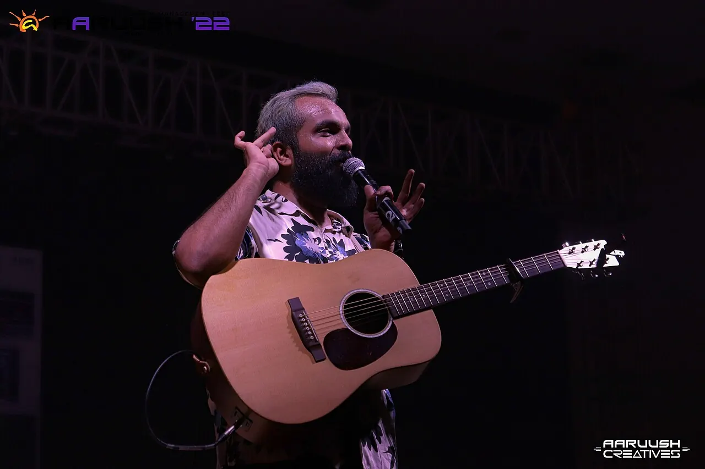

Learn
Nine colleges share one campus, so a computer scientist can take a class next to a future doctor or lawyer.
300+ programmes across 9 colleges
Explore programmesA university in Kattankulathur, Chennai, where engineers, doctors, lawyers and designers learn side by side on one campus.
Nine colleges share one campus, so a computer scientist can take a class next to a future doctor or lawyer.
300+ programmes across 9 colleges
Explore programmes
Shared laboratories, high-performance computing and an incubator turn student and faculty work into papers, patents and companies.
47,000+ publications and 920+ patents
See the researchHostels, sports grounds and student festivals like Aaruush and Milan keep the campus busy long after classes end.
250 acres at Kattankulathur
Campus lifeGraduates go on to recruiters across India and abroad, the civil services, research labs and companies of their own.
5,546+ job offers in 2023–24
Placements and alumniWhether you are applying, choosing a course or planning a visit, start here.

Engineering admits through SRMJEEE. Medicine and dentistry follow NEET. Other programmes have their own routes.
Admissions 2027
Search undergraduate, postgraduate and doctoral programmes by subject or level.
Programme finder
Walk the campus with a student guide, or take the 360° tour from home.
Plan a visitProjects, talks and performances by students, shown with the people who made them.
More work
Students build and explain projects in front of a full hall.

Concerts close each day of the festival. Placeholder copy
Visiting speakers talk to students across colleges. Placeholder copy
“A real quote from a student, alumnus or faculty member goes here, two sentences at most.”
Companies and universities that hire, host and work with SRM students.
Placements